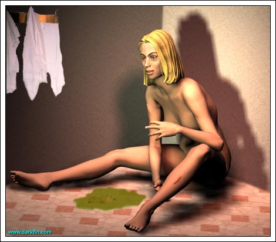
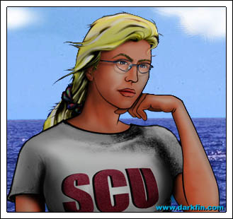
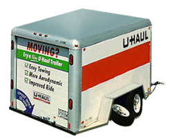
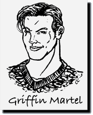

Enter Erika

Erika von Meer (Gasping) A... marked... improvement

Karl Sr. Pass me the muffins, would you, son?
KJ (Doing so) Here you go, Dad
Karl Sr. I see someone left a gift for you out front
KJ The trailer, I know, I'll take care of it after breakfast
Karl Sr. (Returning to his paper) No problem
KJ Oh, I almost forgot, I'm working with Ona Rosa on a pro bono case today and then I'm off to practice, do you mind if we go over the office stuff tomorrow?
Karl Sr. KJ, you promised you'd help out - this is a family business and I want my family involved
KJ Dad, we're worth over $300,000,000 - no matter what happens, I think we're going to be OK - the charity cases I work on involve people who don't know where their next paycheck is coming from
Karl Sr. I think you just like working with Ona Rosa
Karl Sr. (Peering at his son over the paper) She's married with three kids... hands off!
KJ I resent your implication, Dad - I enjoy her company because she is a very smart, very compassionate woman... unlike the usual bevy of the airheads I'm surrounded with daily
Karl Sr. It doesn't stop you from dating them, does it?
KJ Hell no - that's why I spend my weekends with a smart, married woman
Karl Sr. (Shuffling his paper) Fine, I'll just get Erika to help me with the business today - where is she?
KJ I heard the shower running when I came down
Karl Sr. Doesn't that girl spend enough time in the water?
Pauline Could someone please explain to me why in the hell there is a U-Haul in the front yard?
KJ (Mouth half full) 'Morning, Mom - Gracie left it but she didn't say why on her message
Pauline (Taking her seat) Gracie, I should've known - I still don't know why you hang around that creature
KJ Gracie is NOT a creature, she's my friend
Pauline (Pouring herself a cup of black coffee) She's a fat Oriental midget with eight fingers - that constitutes "creature" in my book
KJ Mother, I will not let your racism ruin my enjoyment of this beautiful blueberry muffin
Pauline (Looking at her gold and platinum watch) I have a match with that whore Ursula in less than a half hour, WHERE IS MY GODDAMN FRUIT COCKTAIL?
Karl Sr. (Leaning over and kissing his wife's cheek) Good morning, Darling
Pauline (Returning it) You have butter on your chin, Dear
KJ It could be on worse places
Karl Sr. Heh
Pauline Karl John, do not be vulgar at the breakfast table
Karl Sr. Good morning, Duchess
EvM Father

Pauline Thank you for finally honoring us with your presence
Erika Mother
Pauline Is it really asking too much to have my children share breakfast with their parents once a week?
KJ Mom, Rikka just turned 30 and I'm not far behind, when are you going to stop referring to us as children?
Erika (Looking at her brother) Maybe when you stop spilling jam all over your shirt, Kage
Karl Sr. Heh
Pauline Listen, I suffered through a combined 47 hours of labor for you both - you two will ALWAYS be my children
KJ What if it had only been 46?
Pauline (Turning to her daughter) Honey, you look like shit!
Erika Thank you
KJ Rough night at the lab, Sis?
Erika (Slowly sipping her tea) You could say that
Pauline Well, it certainly wasn't with a man, poor Griffin has been leaving you messages on the hour
Erika My own living cuckoo clock
Pauline Are you going to return them?
Erika Maybe
Pauline Honest to God, Erika, I just don't get you
KJ (Leaning back in his chair) Here we go
Erika (Not looking up from her tea) And what exactly is it you don't get, Mother?
Pauline You
Erika Yes, you've already established that
Karl Sr. (Reading the sports section) I see the Cactus finally won one
KJ I know, I was at the game with a couple of buddies
Pauline (Ignoring the men) I wasn't blessed with your physical gifts - I had to work twice as hard on the tour to succeed
Erika So you've told us... countless times
Karl Sr. Did you see Doug at the game?
KJ Nope
Pauline Erika, you could've been a fashion model, an Olympic athlete... you could've been so much more!
Erika "Could've" - you talk like I'm already in the grave
Pauline Aren't you?
KJ I did score with one of the cheerleaders
Karl Sr. A "Cactus Flower?"
KJ Yep
Pauline You stick yourself away in a dreary lab, all hours of the day and night - and for what? - SAVING FISH? - NO ONE GIVES A FLYING FUCK ABOUT FISH
Erika YOU WOULDN'T KNOW WHAT I DO IN THE LAB BECAUSE YOU DON'T HAVE THE INTELLIGENCE TO EVEN BEGIN TO COMPREHEND IT
Pauline OH, I GET IT, I'M A DUMB JOCK - I CAN'T UNDERSTAND MY DAUGHTER'S SUPER-SMART WORLD OF NUMBERS AND TEST TUBES AND LAB COATS - OOOOOOH
KJ We made out in the parking lot behind left field
Karl Sr. That's nice
Pauline WHAT I DO KNOW IS THAT THE EARTH HAS ALWAYS BEEN HERE AND WILL CONTINUE TO BE HERE, WHETHER OR NOT THERE'S A BLUE FISH, OR A RED FISH, OR AN ECRU FISH - FIND SOMETHING BETTER TO DO WITH YOUR TIME
Erika RIGHT, LIKE CHASE A FUZZY YELLOW BALL AROUND SOME WHITE LINES
KJ On the topic of colors, she had pink nipples instead of red ones
Both women in unison: SHUT UP, KJ
KJ I LOVE SATURDAY BREAKFAST
Karl Sr. Heh
Pauline Hello? - Ursula, Sweetie, are you ready for our match? - WHAT? - AGAIN? - how utterly dreadful, you poor thing!
Karl Sr. What?
Pauline (Holding her hand over the phone) More bodies were found on the beach this morning, just a few houses down from them
KJ (Looking at his watch) Quick, turn on Channel 8!
Dan (On television) From the lake to the bay, everyday, good morning everyone, I'm Dan Henshaw...
Claudiaand I'm Claudia Steel and this is NewsCenter 8 at 8... we begin this morning with breaking news on the shore of one of Duquesa Bay's most popular beaches, KCON's Morrigan McBride is live at the scene with the very latest, Morrigan...
Morrigan Claudia, at approximately six o'clock this morning, the bodies of three local men were discovered on the southern shore of Celoso Beach by a Coast Guard patrol unit -- although it appears that the men drowned, officials have not confirmed the cause of death and declined further comment -- family members of the victims will be notified shortly -- according to area residents, there were no signs of a disturbance during the night or in the early morning hours, however, because of dense fog, no one can say for sure -- since April of last year, six other bodies have been found on area beaches, ranging from Chaparral Heights to Beacon Point -- whether these three are related has yet to be determined -- officials from the Coast Guard, along with the Quartz County Sheriff, will be holding a joint press conference later this evening, you can be certain we'll have more details on this tragedy for you then -- as for Celoso Beach, it will remain closed until further notice... Morrigan McBride, KCON NewsCenter 8
Karl Sr. (Returning to his paper) Interesting
KJ That McBride girl must be new - she's cute in the "wholesome/girl next door/kind you'd marry" type of way
Pauline Oh please, she needs to drop about ten pounds and get a tan!
Erika (Finishing her tea) On that note, I need to get back to the lab
Pauline Of course you do
KJ Because of the murders, Crunch won't be at practice today - please ask Shelby if she can fill in?
Erika (Rising from her chair and taking a water bottle) I will
Pauline Karl John, would you PLEASE do something about that hideous trailer outside?
KJ (Wiping his mouth and getting up) I'll do that right now, Mom
Karl Sr. Erika, I need your help with the business today
Erika I'll be back this afternoon and we can work then, I promise
Karl Sr. (Glancing at KJ) Thank you, Duchess
KJ Rik, are you OK?
Erika (Taking a deep breath and letting it out slowly) Yeah... just a little groggy
KJ DEAR JESUS, PLEASE DON'T LET IT BE GRIFFIN'S SPAWN
Erika What?
KJ Are you pregnant?
Erika WHAT?
KJ Is this morning sickness?
Erika GIMME A BREAK, KAGE
KJ I heard you puking in the bathroom earlier, I tried to check on you but the door was locked
Erika Thanks, but there's no need to worry
KJ If you only had a hangover, I wouldn't worry at all
Erika Look, I just ate something wrong last night, that's it
KJ I know it's hard putting up with all of Mom's crap but she does have a valid point
Erika That's a first
KJ You're spending WAY too much time in the lab
Erika Stop taking her side
KJ I'm not
Erika You've always been a "Momma's Boy"
KJ Well, you're "Daddy's Little Girl," so I guess we're even
Erika I guess
KJ Mom only says what she does because she loves you
Erika Why can't she just make me pudding?
KJ You don't look well, Erika, you haven't been for awhile now
Erika (Pinching her brother's cheek) I'm not the one who didn't shave this morning
KJ (Taking her hand) SERIOUSLY, I'm worried about you!
Erika (Patting his hand) Please don't be, I'm fine!
KJ You better be
Erika Since you're feeling so concerned, may I ask a favor?
KJ Sure
Erika Drop me off at the lab, I don't feel like riding my bike today
KJ Let's go!
KJ You know, you're a better polo player than Crunch and Shelby combined - why don't you play with us anymore?
Erika (Putting on her sunglasses) I have more valuable things to do with my time than waste it on frivolous athletic competitions
KJ (Doing the same) Don't give me that line - you enjoyed it, I know you did
Erika I never said I didn't enjoy it
KJ (Slamming on the brakes) DAMN, I almost forgot
KJ (Noticing) C'mon, Rikka, I can understand Mom's revulsion to it but not you too?

Erika No... I... uh... it's just not something I expected to see
Erika What are you doing?
KJ Ordering pizza
Erika (Getting out of the car) Kage, knock it off!
KJ This is one of Gracie's practical jokes, I know it!
Erika What if this really isn't a joke and you're breaking into someone's personal belongings?
KJ (Opening the door) Aint it fun?
Erika (Folding her arms and stepping back) I will not be an accomplice to this crime
KJ Yeah, whatever, hand me your mini-flashlight
Erika (Looking in her purse) Lose yours again?
KJ You really don't want to know where
KJ (Going through boxes) Hmm... ordinary junk, I guess it is legit
Erika Little Miss Takanachi is going to be furious with you
KJ Look, I was nice enough to let the owner of this trailer use my driveway...
Erika (Raising an eyebrow) Ahem
KJ I was nice enough to let the owner of this trailer use OUR FOLKS' driveway until Gracie gets here
Erika How are you going to explain the lock?
KJ I heard something inside and broke in to let it out?
KJ El Niño?
Erika Over
KJ (Still looking through stuff) I'll think of something to say, I am a lawyer, afterall
Erika Poor woman
KJ (Catching her) How do you know this belongs to a woman?
KJ Purely circumstantial
Erika (Squeezing it) Cute
KJ Ooh... this is really beautiful
Erika (Studying it) That's Belleek porcelain, be very very careful, Kage
KJ What are these symbols?
Erika Celtic knots - now, put it away, this is beyond trespassing!
KJ OH WOW, IT'S HER
Erika Who?
KJ That new chick on the news this morning, Morrigan
Erika McBride
KJ Here's her diploma - she's a Cal. State graduate - and here's a bunch of journalism awards... what does this one say?
Erika (Taking the plaque from her brother) "Hinc quam sic calamus saevior ense, patent."
KJ I know it's Latin but what does it mean?
Erika You're a lawyer, you should know Latin
KJ I only know what I need to know like "fellatio" - now, what does the damn thing say?
Erika "The pen is mightier than the sword."
KJ BORING - I was hoping for a Satanic chant of some kind
KJ (Looking at his pager) Speak of the devil, it's Gracie - she'll be by in a little bit to pick up the trailer
Erika (Slipping the tissue into her pocket) Can we please get going now?
KJ Sure - give me a few minutes to get this into the garage and out of Mom's sight, and then we'll take off
Erika One more thing... I need to make a quick stop on the way to pay a bill
Erika Good morning, Shel
Shelby (Removing protective goggles) Oh, there's that look, I see that look - that's the look of "I just had breakfast with my whole stinking family" look!
Erika (Putting on her lab coat) How perceptive of you
Shelby Girl, you better not be bringing that look anywhere near me, I am having too good of a day for that!
Erika (Going over her) Good news on the kelp tests?
Shelby GREAT NEWS ON THE KELP TESTS, TAKE A LOOK
Erika Excellent results on the Giant Kelp... you might have to recheck the Understory Kelp, however
Shelby I realize that - why else do you think I'm here on a Saturday?
Erika Because you love me?
Shelby AHA - you are a good girl but no amount of love can bring me into work on a weekend
Erika (Smiling) Except for results like these
Shelby So, did you hear about the dead men on Celoso Beach?
Erika Does this involve a priest, a rabbi, and a sailor?
Shelby This is not a joke
Erika Oh
Shelby Captain Craig just called
Erika Uh-huh
Shelby It turns out one of the men was a father of a girl in my son's school
Erika That's a shame
Shelby Anyway, he wants to talk to you about the situation
Erika As usual
Shelby The press will, as well
Erika (Rubbing her forehead) Sandy can play "Dr. Soundbite" for the university today
Shelby Aren't you feeling well, Erika?
Erika Not you, too
Shelby Forgive me for giving a monkey's crap!
Erika No, it's just... I'm a little tired
Shelby THEN WHAT ARE YOU DOING HERE? - SPEND YOUR WEEKEND RESTING OR HAVING FUN... NOT WORKING
Erika I could say the same to you
Shelby (Taking off her lab coat) I'm heeding that very advice and leaving
Erika Kage needs you at polo practice today
Shelby Captain Craig already asked me, that's where I'm going now - you should, too!
Erika (Preparing some beakers) No thanks, I need to do this
Shelby Very well then, I'll see you Monday
Erika Goodbye, Shel
Complete Morph #24
WHITE BLOOD CELL COUNT: 6.84 x10E3/uL
RED BLOOD CELL COUNT: 4.38 x10E6/uL
HEMOGLOBIN: 12.0 g/dL
HEMATOCRIT: 37.1%
SODIUM: 137 mmol/L
POTASSIUM: 3.5 mmol/L
CO2 CONTENT: 25 ol/L
ALKALINE PHOSPHATASE: 98 U/L
After total saltwater submersion, the morph occured within 6.4 seconds, compared to the last one at 7.1 seconds. Mean water temperature was 59 F. Total time of the morph was approximately 3 hours without a resubmergence. The recovery time continues to lessen, however, dehydration is still a problem.
Personal Note: I'm not as dizzy today but slight nausea and a transient migraine persist. I remember all of my actions while transmogrified. Part of me wishes I didn't. The charge of my trident continues to be an issue. Unfortunately, electrical engineering is not my forte. A larger issue looms, and her name is Morrigan McBride. I'm almost certain that she was unaware of my presence but I cannot be entirely sure. Further observation is required.
Erika Hello, Griffin

Griffin I was going to get you, one way or the other
Erika What do you want?
Griffin Have lunch with me?
Erika Aren't you at practice?
Griffin Have a late lunch with me after practice?
Erika Sorry, I need to help out my father this afternoon
Griffin Have an early dinner with me after you work with Karl?
Erika (Sighing) Griffin
Griffin Say yes, say yes, I know you want to, say yes!
Erika If I agree, will you leave me alone until then?
Griffin YES
Erika Alright, pick me up around 5:30 - goodbye, Griffin
Asst. Are you ready, Sir?
Griffin Those three little matters we had this morning... have all traces of their employment been eliminated?
Asst. Taken care of, Mr. Martel
Griffin (Getting up to leave) Good
Asst. We still don't know who... or what... killed them
Griffin A puzzle I look forward to solving... a problem I look forward to eliminating!